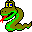

circle_layout
template < typename VertexListGraph, typename PositionMap, typename Radius > void circle_graph_layout(const VertexListGraph & g, PositionMap position, Radius radius);Where Defined
boost/graph/circle_layout.hppDescription
The distance from the center of the polygon to each point is determined by the radius parameter. The position parameter must be an Lvalue Property Map whose value type is a class type containing x and y members that will be set to the x and y coordinates.
Parameters
IN: const VertexListGraph& gThe graph object on which the algorithm will be applied. The type VertexListGraph must be a model of Vertex List Graph.OUT: PositionMap position
Python: The parameter is named graph.This property map is used to store the position of each vertex. The type PositionMap must be a model of Writable Property Map, with the graph's edge descriptor type as its key type. The value type of this property map should be assignable from the type Radius.IN: Radius radius
Python: The position map must be a vertex_point2d_map for the graph.
Python default: graph.get_vertex_point2d_map("position")This is the radius of the circle on which points will be layed out. It must be compatible with double.
| Copyright © 2004 |
Douglas Gregor, Indiana University (dgregor -at- cs.indiana.edu) Andrew Lumsdaine, Indiana University (lums -at- osl.iu.edu) |